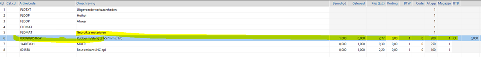
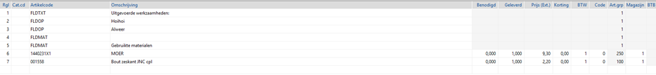

Voorwaarde
Dit komt voor als het volgende ingesteld is bij Instellingen werkorders tabblad Werkbon App:
Toon voorbereide artikelen is ja
Verwerking naar werkorders is per artikelsoort.
Tabblad Orderpicken, Gebruik orderpicken is nee.
NB er wordt gebruik gemaakt van servicemeldingen.
Dit zijn artikelen die eerst op de werkorder worden gezet. Daarna wordt deze servicemelding planning 'definitief' zodat ze op de Powerall Werkbon App komen, waar ze verder afgehandeld worden.
Indien werk niet gereed, blijft regel op besteld staan en wordt deze elke keer getoond in de Werkbon App:

Opmerking: Bij de optie Werk niet gereed op de Werkbon App wordt niet gevraagd wat er met de voorbereidende artikelen moet worden gedaan.
* Ze zijn wel inzichtelijk bij Registratie onder kop Materiaal verbruik.
Indien je toch kiest bij Einde werk voor Werk gereed dan wordt de melding getoond: Let op: niet alle benodigde artikelen zijn gebruikt. Deze artikelen worden hierdoor gemarkeerd als ‘niet meer nodig’.
Het resultaat is dat deze artikelen verwijderd worden van de werkorder:

Op dat moment wordt ook de BTB koppeling uit de regel gehaald. De bestelling blijft bestaan die is immers al verzonden. Daar staat nog steeds dat die benodigd is voor deze werkorder en dat klopt ook, want zo is het origineel besteld.
Gerelateerde onderwerpen
Copyright ©
{kind=link}